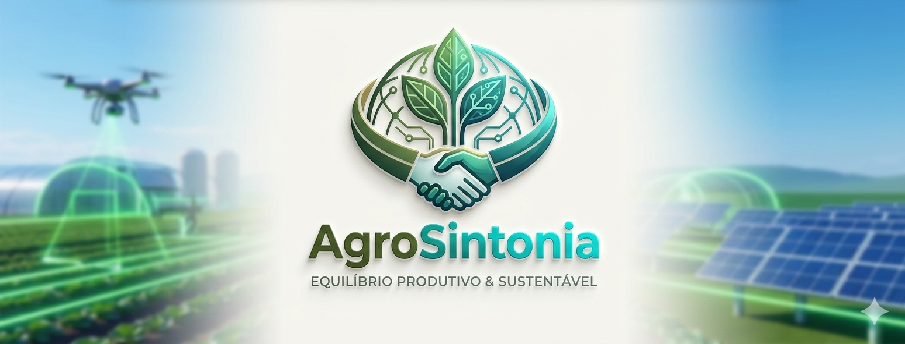

Sustentabilidade 4.0
Onde a Inovação
Onde a Inovação
Encontra o Agro
Unindo inteligência de dados com o respeito ao solo para alimentar as próximas gerações sem esgotar o planeta.
Pilares da Produção Moderna
Como equilibramos o lucro agrícola com a saúde do ecossistema.
Tecnologia de Precisão
Utilizamos Drones de Varredura Multiespectral e Sensores de Solo em Tempo Real para entender o que cada metro quadrado da fazenda precisa.
- Irrigação controlada por IA.
- Plantio direto com mínima perturbação.
- Controle biológico de pragas.

Conhecimento e Transparência
Visão 2026: O Futuro das Agtechs
Confira as tendências que estão transformando o campo este ano.
Desafio AgroSintonia
Teste seus conhecimentos sobre o agro moderno e sustentável!
Carregando pergunta...
AgroSintonia Game: Defenda a Plantação
Use suas habilidades para proteger nossa lavoura de invasores!
Pontos: 0
Vidas: ❤️❤️❤️